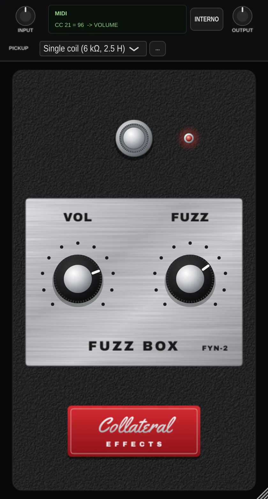
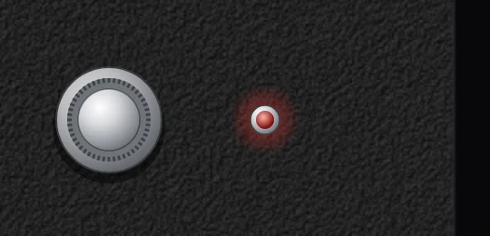
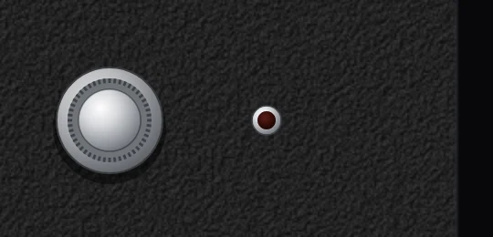
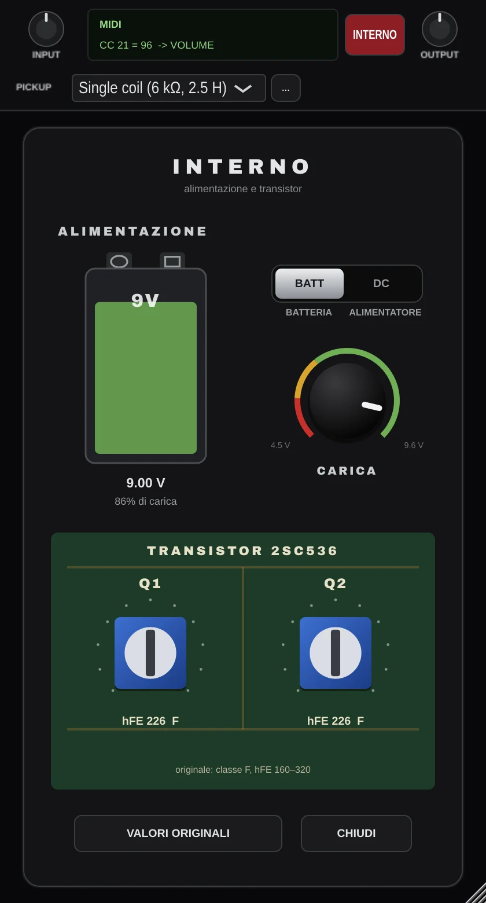

Il fuzz e il FY-2
Il fuzz è nato da un guasto. Per qualche anno è stato considerato un difetto da evitare, poi è diventato il suono della chitarra rock. Il FY-2 appartiene alla generazione di pedali giapponesi che lo hanno reso economico, e quindi disponibile a tutti.
Breve storia del fuzz
- A Nashville Grady Martin registra l'assolo di basso a sei corde di Don't Worry di Marty Robbins. Un preamplificatore guasto del banco lo distorce. Il brano esce così com'è ed entra in classifica: il pubblico sente per la prima volta un suono «sporco» voluto.
- I tecnici Glenn Snoddy e Revis Hobbs costruiscono un circuito che riproduce quel suono e lo cedono alla Gibson, che lo vende come Maestro FZ-1 Fuzz-Tone. Dopo il primo lotto le vendite si fermano quasi del tutto.
- Keith Richards usa un FZ-1 nel riff di (I Can't Get No) Satisfaction dei Rolling Stones e il fuzz diventa di colpo il suono del momento. A Londra Gary Hurst progetta il Tone Bender.
- Arbiter presenta il Fuzz Face, che con Jimi Hendrix definisce il fuzz «classico» a transistor al germanio.
- In Giappone due ex dipendenti della Teisco fondano la Honey. Il progettista Fumio Mieda, autore dello Uni-Vibe, firma i circuiti fuzz della Honey e della Shin-ei, tra cui il Companion FY-2. Nel 1969 la Honey fallisce e la Shin-ei la assorbe.
- La Shin-ei costruisce effetti per molti marchi e il FY-2 circola anche con altri nomi. Mieda passerà poi alla Korg, dove firmerà il sintetizzatore MS-20.
- Gli originali sono rari e ricercati. Il marchio Shin-ei è tornato a produrre repliche e numerosi costruttori artigianali ne offrono cloni.
Il Companion FY-2
Il FY-2 è un fuzz in una scatola a cuneo con due manopole, VOL e FUZZ, e l'interruttore a pedale. Funzionava solo a batteria: il vano si apriva svitando due viti a galletto. Dentro ci sono due transistor al silicio, i NEC 2SC536, invece del germanio dei pedali inglesi: il suono è più duro e più stabile al variare della temperatura.
Come molti effetti giapponesi dell'epoca fu venduto anche con altri marchi; Univox ne commercializzò una versione alimentata a rete, la Uni-Fuzz. Nelle registrazioni compare più che dal vivo, anche perché acceso fa calare il volume. Tom Verlaine dei Television ne possedeva e usava uno. L'enciclopedia Wikipedia lo associa, tra gli altri, a Colin Greenwood dei Radiohead (il basso di Exit Music (For a Film) e Myxomatosis), Graham Coxon, Dan Auerbach, William Reid dei Jesus and Mary Chain e Stephen Morris.
Il suono del FY-2
Il FY-2 non suona come un Fuzz Face e non va regolato come un Fuzz Face. Queste sono le caratteristiche che lo distinguono, tutte riprodotte dal plugin.
- Satura subito
- Bastano pochi millivolt per portarlo in saturazione. Anche suonando piano la nota esce squadrata, compressa e con molto sustain: è un fuzz «a muro», con poca dinamica tra un tocco leggero e uno pesante.
- Il FUZZ cambia il timbro, non la quantità
- La manopola non è un gain. Miscela le uscite dei due stadi, che lavorano in controfase: da un lato prevale la fondamentale e il suono ha più corpo, dall'altro salgono le armoniche e il ronzio. Nelle posizioni intermedie le due uscite si cancellano in parte e il suono si svuota, diventando nasale. Per questo alcuni costruttori la chiamano «Depth» o «Expander».
- Grana ruvida e medi in avanti
- Il silicio dà un fuzz più tagliente e granuloso del germanio, con medi presenti e un attacco che buca il mix. Il FY-2 è noto per il suo carattere «gated»: sul finire della nota il suono non sfuma, si interrompe.
- Dialoga con il pick-up
- L'ingresso ha un'impedenza molto bassa: il pedale «carica» il pick-up, che perde acuti prima ancora di arrivare al fuzz. Single coil, P-90 e humbucker suonano molto diversi, e la manopola del volume della chitarra diventa il vero controllo del guadagno.
- Uscita bassa
- L'originale esce con circa 30 mV: acceso, suona più piano che spento. Il plugin compensa con 18 dB di guadagno pulito dopo il circuito, che non cambiano il timbro.
- Ogni esemplare è diverso
- Il guadagno dei transistor varia molto da un pezzo all'altro, e la batteria scarica cambia il suono. Il pannello Interno permette di regolare entrambe le cose.
Il FYN-2 non usa curve di distorsione approssimate: calcola il circuito originale campione per campione, con i valori del pedale. Tutto ciò che senti, comprese le interazioni tra i comandi, viene dal comportamento del circuito.
Installazione
Il FYN-2 funziona su macOS con processori Apple Silicon (M1–M4) e Intel. Il pacchetto contiene tre versioni dello stesso plugin:
| Versione | Dove viene installata | Per |
|---|---|---|
| VST3 | /Library/Audio/Plug-Ins/VST3 | Ableton Live, Cubase, Reaper, Studio One e altre |
| Audio Unit | /Library/Audio/Plug-Ins/Components | Logic Pro, GarageBand, MainStage |
| Standalone | Applicazioni | Suonare senza DAW |
- Scarica ed estrai
FYN2-macOS.zip. - Il plugin non è firmato con un certificato Apple, quindi macOS lo blocca al primo avvio. Apri il Terminale, scrivi
xattr -dr com.apple.quarantineseguito da uno spazio, trascina nella finestra la cartellaFYN-2e premi Invio. - Fai doppio clic su Installa FYN-2.command e inserisci la password di amministratore. Lo script copia le tre versioni nelle cartelle indicate e rimuove eventuali copie della vecchia versione «PF-2 Fuzz».
- Riavvia la DAW. In Logic, se il plugin non compare, apri Plug-in Manager e scegli Reset & Rescan Selection.
Primo avvio della Standalone
macOS chiede il permesso di usare il microfono: concedilo, perché è così che l'app riceve gli ingressi della scheda audio. Poi apri Options › Audio/MIDI Settings, scegli la scheda come ingresso e uscita e togli la spunta da Mute audio input.
L'interfaccia
La finestra ha due parti. In basso c'è il pedale, con gli stessi comandi dell'originale. In alto c'è la barra di servizio, con quello che serve in studio: livelli, pick-up, MIDI e accesso all'interno. La finestra si ridimensiona trascinando l'angolo in basso a destra, dal 75% al 200%.

1 2 3 4 5 6 7 8 9 10- INPUT: livello in ingresso al circuito.
- Display MIDI: ultimo messaggio ricevuto e stato del MIDI Learn.
- INTERNO: apre il fondo del pedale (alimentazione e transistor).
- OUTPUT: livello finale, dopo il pedale.
- PICKUP: tipo di pick-up della chitarra.
- «…»: salva o elimina le tue chitarre.
- Footswitch: accende e spegne l'effetto.
- LED: acceso quando l'effetto è attivo.
- VOL: volume d'uscita del pedale.
- FUZZ: carattere del fuzz.
Gesti comuni a tutte le manopole
- Trascina in verticale per regolare.
- Doppio clic per tornare al valore predefinito.
- Clic destro per il menu MIDI Learn (vedi Controllo MIDI).
Il pedale
Le manopole hanno una scala da 0 a 10, come quella stampata sul pannello. Entrambe corrispondono ai potenziometri lineari da 50 kΩ dell'originale.
FUZZ
Sceglie il colore del fuzz, non la sua quantità: il pedale è saturo in qualunque posizione. Girando in senso orario salgono le armoniche alte e il ronzio. Verso sinistra il suono è più pieno e la fondamentale più forte. Nella zona centrale si trova il timbro più nasale e cavo. Il valore predefinito è 7.
Cambiando il FUZZ cambia anche il volume. Dopo ogni regolazione del FUZZ ritocca VOL.
VOL
Volume d'uscita del pedale, predefinito a 5. Come sull'originale è un potenziometro inserito nella rete d'uscita del circuito. Per bilanciare il pedale acceso con quello spento usa VOL; per adattare il plugin al resto della catena usa OUTPUT.
Footswitch e LED
Clic sull'interruttore per accendere o spegnere l'effetto. Premuto, il pulsante affonda nella sua ghiera. Il LED rosso, che l'originale non aveva, indica l'effetto attivo.


Il bypass è true bypass, come sul pedale: il segnale passa pulito e, finita una dissolvenza di 50 ms che evita i click, il circuito smette di essere calcolato e non consuma CPU. Alla riaccensione il circuito riparte dal suo punto di riposo.
La barra di servizio
Questi comandi non esistono sul FY-2. Servono a inserire il pedale correttamente in una catena digitale.
INPUT e OUTPUT
Due regolazioni da −24 a +24 dB, predefinite a 0 dB.
- INPUT agisce prima del circuito, quindi cambia il suono: più segnale significa più compressione e più saturazione, esattamente come una chitarra con pick-up più potenti. Si usa per calibrare l'ingresso sulla tua scheda audio.
- OUTPUT agisce dopo il circuito e cambia solo il livello. Equivale ad alzare o abbassare l'amplificatore.
Display MIDI
Mostra l'ultimo controllo MIDI ricevuto, per esempio CC 21 = 96 -> VOLUME: numero del controller, valore e comando a cui è assegnato. Durante il MIDI Learn indica quale comando è in attesa di un controller.
PICKUP
Indica al plugin che chitarra stai suonando. Sul pedale vero il pick-up fa parte del circuito d'ingresso. Inoltre la scheda audio, a differenza del FY-2, registra il pick-up quasi a vuoto, con il suo picco di risonanza. Scegliendo il pick-up il plugin ricostruisce il segnale che il FY-2 avrebbe ricevuto da quella chitarra.
| Opzione | Resistenza | Induttanza | Effetto sul suono |
|---|---|---|---|
| Ideale | 10 kΩ | — | Nessuna interazione e nessuna correzione. Per sorgenti che non sono una chitarra o per tracce già trattate. |
| Single coil | 6 kΩ | 2,5 H | Il più brillante; è l'impostazione predefinita. |
| P-90 | 8 kΩ | 6 H | Il più scuro e corposo. |
| Humbucker | 10 kΩ | 5 H | Scuro, tra il single coil e il P-90. |
| Personalizzato | 2–20 kΩ | 0,5–10 H | I valori del tuo pick-up. |
Con Personalizzato compaiono due cursori, R e L. La resistenza in continua (in kΩ) è quasi sempre dichiarata dal costruttore del pick-up; l'induttanza (in henry) meno spesso: se non la conosci, parti dal valore del tipo più simile.
Le mie chitarre
Il pulsante «…» accanto al menu salva i valori attuali con il nome della chitarra, per esempio «Tele» o «SG». Le chitarre salvate compaiono nel menu, nella sezione Le mie chitarre. Salvando con un nome già usato aggiorni quella chitarra; dallo stesso pulsante puoi eliminarla.
L'elenco è unico per tutti i progetti e tutte le DAW. Ogni progetto ricorda quale chitarra era selezionata. Se modifichi R o L di una chitarra salvata, il menu torna su «Personalizzato» finché non la salvi di nuovo.
Calibrare l'ingresso
Un fuzz reagisce alla tensione reale che esce dalla chitarra. Il plugin, però, riceve un numero digitale, e quanti volt rappresenti dipende dalla scheda audio e dal suo guadagno.
Il FYN-2 assume che il fondo scala digitale (0 dBFS) corrisponda a 1 volt di picco. Quasi tutte le schede, con il guadagno dell'ingresso strumento al minimo, hanno un fondo scala più alto. Il plugin quindi riceve la chitarra più debole di com'è davvero, e il pedale suona un po' meno saturo dell'originale.
Con il guadagno al minimo, inoltre, la scheda non chiude l'ingresso: abbassa solo la sensibilità. Una chitarra arriva comunque con un segnale ben udibile, e al FY-2 bastano pochi millivolt per saturare. Per questo senti il fuzz pieno anche con la manopola della scheda a zero.
Il calcolo
Cerca nelle specifiche della tua scheda il livello massimo dell'ingresso strumento (Hi-Z, DI o Inst) con il guadagno al minimo, espresso in dBu. Poi:
INPUT = livello massimo della scheda in dBu + 0,8 dB
Per ogni dB di guadagno che aggiungi sulla scheda, togli un dB da INPUT.Esempio: Audient iD14 MKII
Il manuale dichiara per l'ingresso DI un livello massimo di +10 dBu. Con il guadagno al minimo e il boost da +10 dB dell'app iD disattivato, imposta INPUT a +10,8 dB. Con il boost attivo, scendi a +0,8 dB.
Dopo la calibrazione
Il pedale suonerà più saturo e compresso di prima, come l'originale. Per pulire il suono usa il volume della chitarra, non il guadagno della scheda: è il modo in cui si suonava il FY-2. La calibrazione vale solo con il guadagno della scheda al minimo, perché le posizioni intermedie della manopola non sono graduate.
L'interno
Il pulsante INTERNO apre il fondo del pedale. Qui si regolano due cose che sul FY-2 non hanno una manopola, ma che cambiano il suono di un esemplare rispetto a un altro: la batteria e i transistor.

1 2 3 4 5 6 7Batteria o alimentatore
L'originale funzionava solo a batteria. BATT simula una 9 V di cui scegli lo stato di carica; DC simula un alimentatore stabilizzato a 9 V, sempre uguale, utile quando vuoi un riferimento che non cambia.
CARICA
Regola la tensione della batteria da 9,6 V, appena tolta dalla confezione, a 5,4 V, esaurita. Il pannello mostra la carica residua secondo la curva di scarica di una alcalina da 9 V. L'arco rosso, fino a 4,5 V, va oltre il punto in cui una batteria vera smetterebbe di funzionare: è lì per chi cerca suoni insoliti.
| Tensione | Carica | Stato |
|---|---|---|
| 9,6 V | 100% | Batteria nuova |
| 9,0 V | 86% | Valore predefinito |
| 8,1 V | 50% | A metà vita |
| 7,4 V | 25% | Da cambiare presto |
| 6,6 V | 10% | Quasi esaurita |
| 5,4 V | 0% | Esaurita |
| 4,5 V | — | Oltre la scarica (zona rossa) |
Il FY-2 si autopolarizza, quindi con la batteria scarica non «sputacchia» come un Fuzz Face. Scendendo di tensione il volume cala (circa −7 dB a 5,4 V) e il suono si comprime. Le armoniche pari crescono molto: il fuzz diventa più caldo e asimmetrico, quasi ottavato. Compensa il calo di livello con VOL od OUTPUT.
I transistor: hFE Q1 e hFE Q2
L'hFE è il guadagno di un transistor e cambia molto da un esemplare all'altro, anche nella stessa partita. Per questo due FY-2 non suonano mai uguali. I trimmer vanno da 60 a 560; l'originale montava transistor di classe F (hFE 160–320) e il valore predefinito, 226, ne è il centro.
- Q1 è il primo stadio: decide quanto il pedale satura e comprime.
- Q2 è lo stadio d'uscita: con valori alti il suono è più «affamato» e aggressivo, con valori bassi più morbido.
Sotto ogni trimmer compare la classe corrispondente (da D a G). Doppio clic su un trimmer o sulla manopola CARICA per tornare al valore originale.
Tutto è automatizzabile
Alimentazione, carica e transistor sono parametri come gli altri: puoi automatizzarli nella DAW o assegnarli a un controller MIDI. Una batteria che si scarica lungo un brano è un effetto possibile.
Controllo MIDI
Ogni comando del pedale e dell'interno si può pilotare da un controller MIDI, per esempio una Arturia KeyLab. Tre comandi sono già assegnati.
| Comando | CC predefinito |
|---|---|
| FUZZ | 20 |
| VOLUME | 21 |
| Footswitch | 64 (pedale sustain) |
Si possono assegnare anche INPUT, OUTPUT, alimentazione, carica, hFE Q1 e hFE Q2.
Assegnare un controller
- Clic destro sul comando e scegli MIDI Learn. Il display mostra il comando in attesa.
- Muovi la manopola, il cursore o il pulsante del controller. L'assegnazione è fatta.
Dallo stesso menu puoi annullare il Learn, rimuovere l'assegnazione di un comando o ripristinare la mappatura predefinita. La mappatura viene salvata nel progetto.
Footswitch e deviatore BATT/DC cambiano stato a ogni pressione del pulsante. Sulla KeyLab imposta il pulsante in modalità Gate (momentanea) in Arturia MIDI Control Center: in modalità Toggle il pulsante invia la pressione e il rilascio in due colpi separati, e servirebbero due pressioni per ogni commutazione.
Nelle DAW
- Ableton Live
- Inserisci il plugin sulla traccia audio della chitarra. Crea una traccia MIDI con ingresso KeyLab e in MIDI To scegli la traccia della chitarra e poi «FYN-2». In alternativa usa la mappatura MIDI di Live (Cmd+M) direttamente sui parametri.
- Logic Pro
- L'Audio Unit è un normale effetto audio e non riceve i CC. Usa le assegnazioni dei controller di Logic: Cmd+K, muovi il comando nel plugin, poi la manopola sulla tastiera. Il MIDI Learn interno vale per VST3 e Standalone.
- Altre DAW VST3
- I CC arrivano attraverso i parametri «MIDI CC» che il formato VST3 espone. Per questo nell'elenco delle automazioni ne vedrai molti: è normale.
In studio e dal vivo
La posizione nella catena
Metti il FYN-2 per primo, direttamente sulla traccia della chitarra registrata dall'ingresso strumento. Il pedale vero va collegato alla chitarra perché il suo ingresso interagisce con il pick-up, e il plugin ricostruisce proprio quell'interazione: un compressore, un equalizzatore o un altro pedale prima del FYN-2 la falserebbero. Dopo il fuzz mettici quello che vuoi; un simulatore di amplificatore è il complemento naturale.
Registrare la chitarra pulita e applicare il fuzz in seguito ti permette di cambiare impostazioni a registrazione finita, come in un reamping. Ricordati di scegliere il pick-up della chitarra usata per quella traccia.
Punti di partenza
Impostazioni da cui partire, da rifinire a orecchio. Dove non è indicato altro, batteria a 9 V e transistor ai valori originali.
Riff garage
Più corpo e meno ronzio, per riff ritmici che restano comprensibili.
Single coil, volume della chitarra al massimo
Muro di ronzio
Il FUZZ tutto aperto con un humbucker: saturazione massima, armoniche alte, sustain lunghissimo.
Humbucker
Il centro cavo
Nella zona centrale del FUZZ le uscite dei due stadi si cancellano in parte: un timbro nasale che si fa largo nel mix.
Qualsiasi pick-up
Dal volume della chitarra
Lascia il pedale aperto e abbassa il volume della chitarra a 5–6: il fuzz si assottiglia fino a un crunch. Rialzalo per l'assolo.
P-90 o humbucker
Batteria stanca
Più compresso, caldo e asimmetrico, quasi ottavato sulle note alte. Recupera il livello con OUTPUT.
Interno: BATT, CARICA a 6,6 V (10%)
Esemplare cattivo
Due transistor molto «caldi», come un FY-2 uscito bene dalla fabbrica: più aggressivo e più saturo.
Interno: hFE Q1 400, hFE Q2 320
Dal vivo con la Standalone
La Standalone è il modo più diretto per suonare con il FYN-2 senza aprire una DAW. Imposta nella scheda audio un buffer basso (64 o 128 campioni) per ridurre il ritardo tra corda e suono; il plugin aggiunge solo 6 campioni di latenza. Con un controller MIDI puoi accendere il pedale con il CC 64, cioè con un normale pedale sustain.
Risoluzione dei problemi
La Standalone non riceve la chitarra
Apri Impostazioni di Sistema › Privacy e sicurezza › Microfono e abilita FYN-2. Poi, in Options › Audio/MIDI Settings, controlla che la scheda sia selezionata come ingresso e togli la spunta da Mute audio input.
La chitarra arriva forte anche con il guadagno della scheda a zero
È normale: al minimo la scheda abbassa la sensibilità ma non chiude l'ingresso, e il FY-2 satura con pochissimo segnale. Vedi Calibrare l'ingresso e usa il volume della chitarra per pulire il suono.
Logic non mostra il plugin
In Plug-in Manager seleziona FYN-2 e scegli Reset & Rescan Selection. Se ancora non compare, chiudi Logic e scrivi nel Terminale killall -9 AudioComponentRegistrar.
macOS dice che il plugin è danneggiato o non può essere aperto
È il blocco per i programmi scaricati da Internet senza firma Apple. Ripeti il passo 2 dell'installazione e reinstalla.
Il footswitch MIDI risponde solo a una pressione su due
Il pulsante del controller è in modalità Toggle. Impostalo in modalità Gate (momentanea).
Il pedale acceso suona più piano o più forte di quello spento
Bilancia con VOL. Se vuoi confronti precisi, regola OUTPUT finché acceso e spento hanno lo stesso livello percepito.
Specifiche
| Formati | VST3, Audio Unit, Standalone |
|---|---|
| Sistema | macOS, Apple Silicon e Intel |
| Canali | Mono: usa il canale d'ingresso su cui arriva la chitarra e copia l'uscita su tutti i canali |
| Frequenze di campionamento | 44,1–192 kHz. Il circuito lavora sempre tra 350 e 390 kHz (sovracampionamento 8× a 44,1/48 kHz, 4× a 88,2/96 kHz, 2× a 176,4/192 kHz) |
| Latenza | 6 campioni, compensata automaticamente dalla DAW |
| Carico di CPU | Circa il 9% di un core con l'effetto attivo; nullo in bypass |
| Comandi | FUZZ, VOL, footswitch; INPUT e OUTPUT ±24 dB; pick-up; alimentazione, carica 4,5–9,6 V, hFE Q1 e Q2 60–560 |
| MIDI | MIDI Learn su tutti i comandi; predefiniti CC 20, 21 e 64 |
| Modello | Simulazione del circuito completo del Shin-ei FY-2 con transistor NEC 2SC536 e potenziometri da 50 kΩ lineari |
Fonti della parte storica
- Maestro FZ-1 Fuzz-Tone, Wikipedia
- La nascita del fuzz, FuzzFaced
- Shin-ei Companion FY-2, Wikipedia
- Univox Uni-Fuzz & Super-Fuzz, Vintage Guitar
- Univox Superfuzz: history, Coda Effects
- Tym Fuzz Box FY-2, Tym Guitars
- Shin-ei Companion FY-2 di Tom Verlaine, Retrofret
- Audient iD14 MKII, manuale V1.3
Shin-ei, Companion, Univox, Maestro, Gibson e gli altri marchi citati appartengono ai rispettivi proprietari e sono nominati solo per riferimento storico. Il FYN-2 non è affiliato a nessuno di essi. Caratteri dell'interfaccia: Archivo Black (SIL Open Font License) e Yellowtail (Apache 2.0).